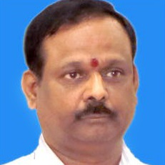

About Us
The Telangana Open School Society is formerly a part of Andhra Pradesh Open School Society of the erstwhile state of Andhra Pradesh established in the year 1991 to provide a flexible type of non-formal education to the drop-out children.
Telangana Open School Society was formed and registered under A.P. Societies Registration Act, 2001 and it was functioning under the School Education Department, Government of Telangana.
Key People
- Smt. Ranjeev R. Acharya, IAS, Principal Secretary, TS Government
-  S. Venkateswara Sharma, Director